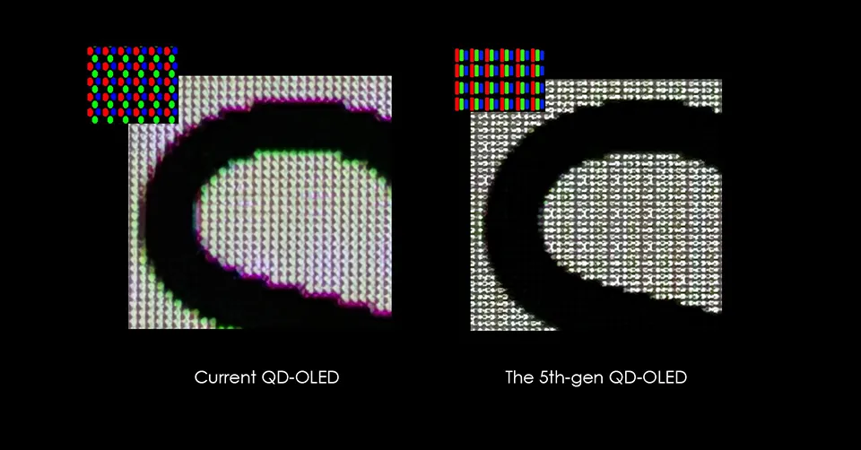

在CES 2026期間，華碩與微星等顯示器廠商已率先對這項變化進行強調，並以“Stripe RGB”技術進行宣傳。華碩方面將在ROG Swift OLED PG27UCWM、ROG Swift OLED PG34WCDN以及ROG Strix OLED XG34WCDMS等型號上採用新一代RGB條紋像素佈局；微星則計劃在MEG X和MPG 341CQR QD-OLED X36等機型中引入類似方案。這些產品所採用的面板主要來自LG Display與Samsung Display，它們是當前高端電競顯示器面板的核心供應商。
Samsung Display本月早些時候宣佈，已開始量產號稱“全球首款34英寸360Hz QD‑OLED面板”，並採用其命名為“V‑Stripe”的RGB像素結構。儘管名稱中帶有“V”，但這一結構實際上指的是子像素按垂直方向排列，而非真正呈V字形。三星表示，這種結構能夠明顯改善文字邊緣的清晰度，使其更適合需要大量閲讀與編輯文本的用户，例如文檔處理、代碼編寫和內容製作人羣。

Samsung Display還透露，自2025年12月起，已經向包括華碩、微星和技嘉在內的七家全球顯示器廠商供應這類新面板，為2026年一整年的電競顯示器更新潮做鋪墊。在此之前，許多采用QD‑OLED的超寬屏顯示器在桌面使用場景中常被用户抱怨文字顯示略顯發虛，新結構被寄望於從根本上解決這一痛點。
另一家重量級面板廠商LG Display則在去年底宣佈，將在拉斯維加斯舉行的CES上首發“全球首款採用RGB條紋結構、分辨率為4K、刷新率為240Hz的27英寸OLED顯示器面板”。與此前廣為人知的“WOLED”（在傳統RGB基礎上額外加入白色子像素）以及三角排列像素方式不同，新款RGB條紋面板專門針對Windows等主流操作系統及其字體渲染機制進行優化，以提升文字可讀性和色彩精度，同時兼顧第一人稱射擊等電競遊戲的畫面表現。
值得注意的是，本次CES上LG Display展示的“RGB stripe”並非唯一與“RGB”相關的新技術，該公司還帶來了被稱為“Primary RGB Tandem 2.0”的新一代堆疊式OLED方案。這項技術是在其自有“Primary RGB Tandem”技術基礎上的升級版，通過將紅、綠、藍三原色發光層獨立疊加，以進一步提升整塊面板的亮度表現。在電視與顯示器技術路線之爭中，三星的QD‑OLED依賴量子點提升亮度，而LG則押注這種多層堆疊結構來彌補OLED亮度上的短板。
去年LG G5電視上首次搭載的Primary RGB Tandem 1.0已經給外界留下較深印象，而此次升級到2.0版本後，LG Display宣稱在電競顯示器領域可實現最高1500尼特的峯值亮度，在電視上則可將峯值進一步推高至約4500尼特。華碩透露，其PG27UCWM顯示器將同時採用RGB條紋像素佈局與Tandem OLED面板，不過目前尚不清楚是否已直接使用Tandem 2.0版本。
綜合來看，LG Display與Samsung Display在本屆CES上同時押注兩條技術主線：一是通過垂直RGB條紋像素結構顯著提升文字和細節的清晰度，特別是為同時承擔辦公與娛樂任務的超寬屏顯示器“補課”；二是通過量子點或多層RGB堆疊的不同路徑，持續推高OLED面板的整體亮度表現。隨着新一代面板已經開始量產並供應給多家顯示器廠商，2026年的OLED電競顯示器市場將迎來一波以“可讀性”與“高亮度”為核心賣點的新品競賽。